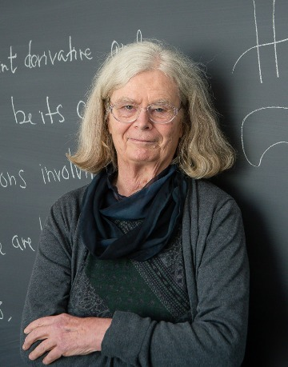
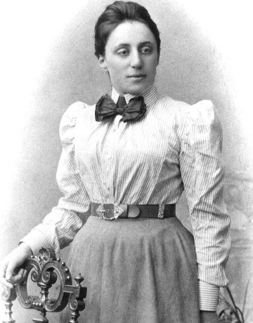

350 A.D.
"Hypatia’s case then was this. She lived in a time when her intellectual heritage, a seven-hundred-year-old tradition, was crumbling. The supports...had all been swept away by the swell of ignorant dogmatism."
Hypatia was a philosopher, mathematician, and astronomer in ancient Alexandria. She is one of the earliest known female mathematicians, celebrated for her work in teaching and expanding upon the mathematical knowledge of her time. Hypatia also applied mathematics to philosophy. She built on the ideas of Neoplatonism, a way of thinking based on the belief that humans form ideas from their experiences.
1942 - Now

“I don’t believe anyone who says they don’t have a mathematical mind.”
Karen Uhlenbeck is an American mathematician who transformed the field of geometric analysis. She was the first woman to win the Abel Prize—one of the highest honors in mathematics. Her work connects geometry and physics, providing insights into how space and energy behave.
1882 - 1935

"I am not a woman mathematician, I am a mathematician,"
German mathematician Emmy Noether significantly impacted theoretical physics and mathematics. Her renowned Noether's Theorem illustrates the relationship between symmetries and conservation laws, such as time symmetry and energy conservation. Despite facing discrimination as a female academic, she made substantial contributions to abstract algebra, forming the basis for modern ring, field, and group theory. Noether's revolutionary ideas influenced Einstein and many other scientists, securing her legacy as one of history's most important mathematicians.
1977 - 2017

“The beauty of mathematics only shows itself to more patient followers.”
Iranian mathematician and professor Maryam Mirzakhani was well-known for her groundbreaking contributions to dynamical systems and geometry. She revealed profound insights into the forms and structures of curved spaces and made vital contributions to the study of hyperbolic geometry and Riemann surfaces. She was the first Iranian and the first woman to get the coveted Fields Medal in 2014. Mathematicians and students worldwide are still motivated by her intelligence, inventiveness, and tenacity.
1918 - 2020

"Girls are capable of doing everything men are capable of doing. Sometimes they have more imagination than men."
Known as one of the most influential Black women in tech, Katherine Johnson’s mathematical brilliance ensured the success of pivotal NASA missions, including John Glenn’s orbital flight. Her ability to perform complex calculations manually earned her a reputation as a “human computer.” Johnson’s story, highlighted in the film Hidden Figures, showcases her crucial role in advancing the U.S. space program during a time of racial and gender inequality.
1984 - Now
“I feel sad that I’m only the second woman.”
Maryna Viazovska is a Ukrainian mathematician who solved one of the hardest problems in geometry — the sphere-packing problem in eight dimensions. Her brilliant solution showed the most efficient way to arrange spheres so that they take up the least space. For this achievement, she won the Fields Medal in 2022, becoming only the second woman ever to receive it.